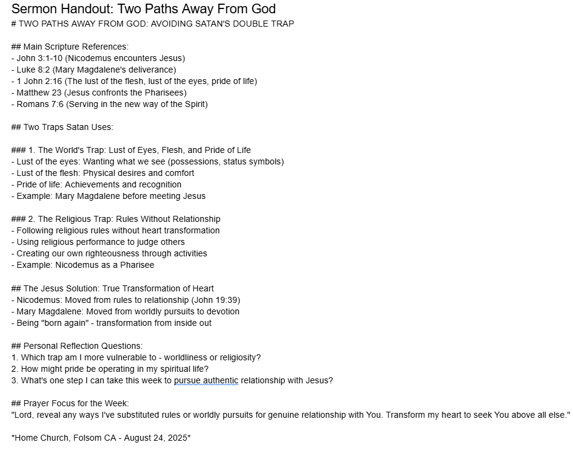

Blessed Lord's Day to you. I know some of you are probably worried about me getting too deep into AI — how much I lean on it in my Bible study and Quiet Times. Others are probably concerned I've built myself an artificial church world after my surgery. I understand both concerns.
I tried hard to keep going to church in person, for at least a year afterward. Eventually I realized I wasn't doing anyone any good by showing up. I'm extremely technical and a natural problem-solver, so it was easy for me to construct my own version of church — perfect for me, but artificial all the same. Off the top of my head, church covers at least two overarching kinds of “body of Christ” needs: unidirectional and bidirectional. Unidirectional is mainly Worship and the Sermon. Bidirectional is Fellowship, Prayer Time, Bible Study, Accountability, Encouragement, and ministering to one another with our gifts.
Substituting for the unidirectional half was easy. In my Quiet Times I spend a long stretch listening to worship music — there's so much great Christian music available in every format now. I also always listen to a Spurgeon sermon; in my mind there's still no one like him. There are countless amazing sermons online, on YouTube and Sermon Index alone.
Substituting for the bidirectional half was also fairly easy. At Intel we had a great Bible study among the engineers. At GlobalFoundries (AMD) we had a good group too. When I lived on my boat in San Mateo, I joined my cousin-in-law's Bible study, which was great as well. So without much effort I just kept meeting with all three groups over video calls each week. I'd been in BSF before my tumor, and folding that back in was an easy add too.
I'll admit — I love my artificial church. How could I not? I've curated the very best of the Christian universe, which the internet and now AI make almost too easy: the best songs, by the original artists, spanning centuries; the best sermons ever preached, by Spurgeon and all the famous patriarchs and missionaries; theological instruction layered in through my DTS connections; research happening in real time alongside it all. And on the bidirectional side, I've known and loved my Intel group, my GF group, and my SFC group for a long time, and I feel deeply connected to each person in them. And all of you in BSF know how I feel about you — you've done more than anyone to keep me a somewhat normal Christian through all of this.
I'm not advocating for what I've built. I was backed into a corner, and I'm at peace with what I came up with — I believe God helped me get there. But there is nothing like the real church. Nothing like real, living Christians in the room with you. Nothing like singing your heart out to Jesus in unison with brothers and sisters. Nothing like a church potluck. In a lot of ways what I have is ideal, at least for me — but it's not ideal in other ways, a few of which I just named.
So why the long introduction? Because I was playing around this morning in my AI/Bible world and asked it to write me a sermon. I thought it did a genuinely good job. Yes, I'm aware of the dangers I just spent five paragraphs on, but tell me honestly — was your sermon from your real church better this week?
Give it a quick read. It even made a handout sheet for me:

Comments